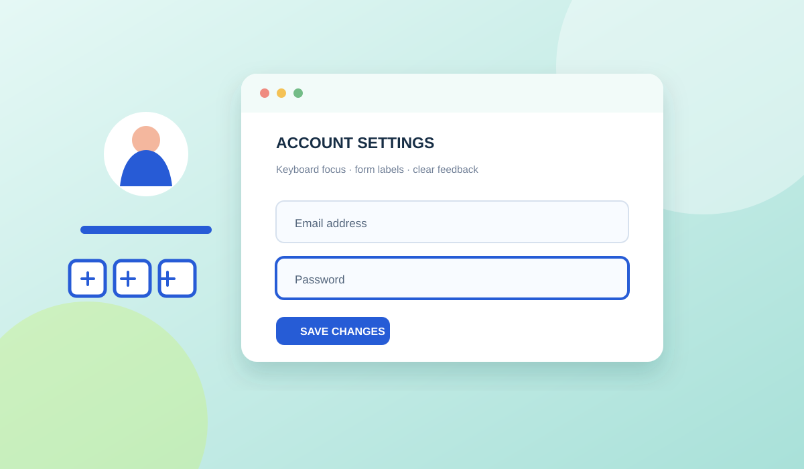

ADVANCED INCLUSION · INTERMEDIATE
Accessibility testing
Evaluate whether people can use a product with different input and output methods. Combine keyboard, visual, semantic, and assistive technology checks with focused user journeys.
What you will learn
- Run a keyboard-only pass through a critical flow.
- Inspect names, roles, states, focus order, and error feedback.
- Check text scaling, contrast, and responsive layouts for barriers.
- Write actionable accessibility findings with steps and impact.
Course lessons
1. Choose journeys and test conditions
Start with essential tasks such as sign-in, search, checkout, or submitting a form. Identify page states, dialogs, validation errors, and dynamic updates. Record browser, operating system, zoom, and assistive technology so another tester can reproduce observations.
2. Navigate without a mouse
Use Tab, Shift+Tab, Enter, Space, and arrow keys to operate controls. Check visible focus, sensible order, and unexpected traps. Open dialogs and menus, then verify focus moves in and returns to the initiating control. Confirm custom widgets expose familiar keyboard behavior.
3. Inspect names, roles, and state
Use the browser accessibility tree or a screen reader to inspect how controls are announced. Buttons and inputs need understandable names; expanded, selected, invalid, and disabled states should be conveyed when relevant. Verify errors are associated with fields and status updates are announced.
4. Review visual and responsive access
Check text at increased zoom and narrow viewport sizes. Look for information communicated by color alone, low-contrast text, clipped labels, and hard-to-find controls. Pair automated scans with manual review; automated results cannot judge every interaction or context.
5. Practice: complete a form with keyboard and screen reader
Choose a registration form in a practice environment. Complete it using only the keyboard, then repeat with a screen reader. Submit invalid values and document error presentation, focus behavior, and correction guidance. File a finding with exact steps, expected and observed behavior, and task impact.